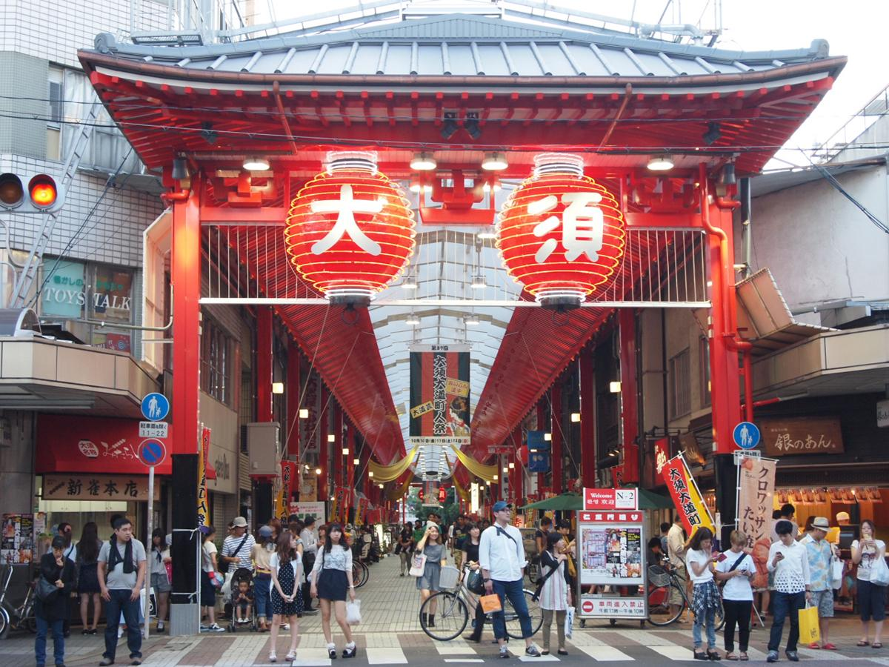
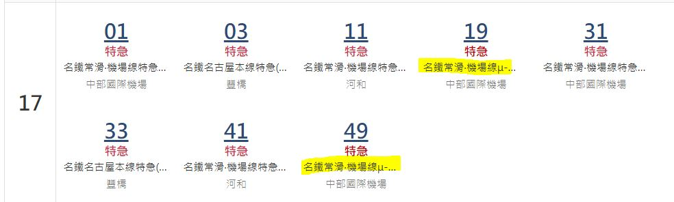

名古屋->伊奴神社
名古屋
地鐵櫻通線
丸之內
丸之內
地鐵鶴舞線
庄內通
退房之後寄放行李在飯店或名古屋車站
伊奴神社
伊奴神社->大須觀音、榮町
庄內通
地鐵鶴舞線
大須觀音
大須觀音商店街往榮町方向一路逛街吃喝

水曜日のアリス 名古屋
極味や 名古屋パルコ店
HARBS ハーブス 栄本店
OASIS21 オアシス21
中部電力 MIRAI TOWER
大須觀音商店街資訊
大須觀音商店街地圖
榮町->名古屋->中部國際機場
榮町
地鐵東山線
名古屋
名古屋
名鐵特急μSKY
中部國際機場

μSKY時刻表
名古屋車站往機場指引
列車及車票資訊
中部國際機場->桃園
星宇JX839
19:30
中部國際機場第一航廈
21:35
桃園第一航廈
回首頁